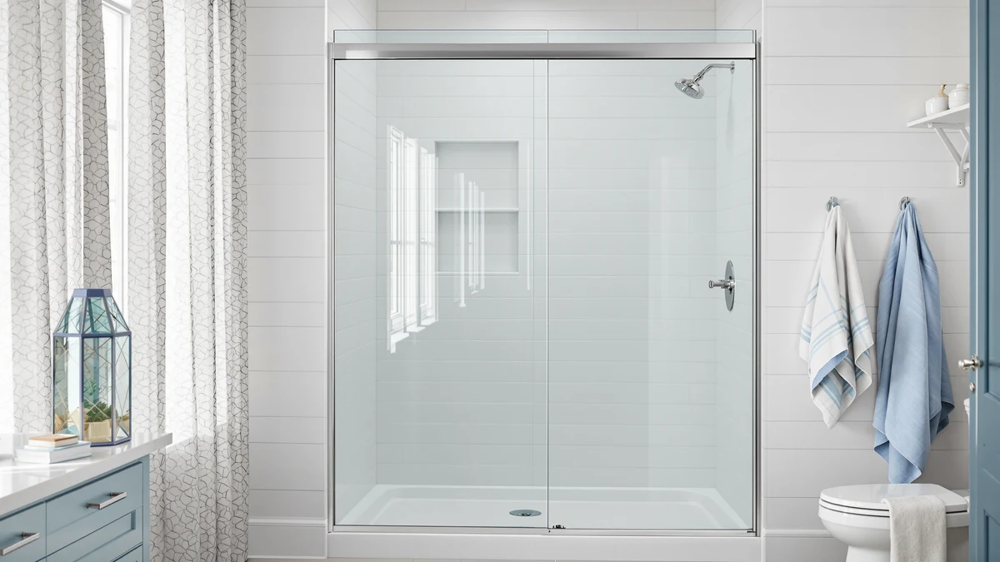

Woodbridge Frameless Sliding Shower Review (2026): Worth It?
Prices and picks verified as of October 2026. Independent, reader-supported reviews.


Quick Answer
Our woodbridge frameless sliding shower review found that the WOODBRIDGE Frameless Sliding Shower Door is a solid match for a standard 60-by-76-inch opening, and verified owner reviews back up its sliding hardware more consistently than the cheaper alternatives we compared. At $612.00 it costs more than the Findepot and ComfyStyle, but the comparison below shows where that extra money goes.
Our pick: Woodbridge Frameless Sliding Shower Door, $612.00 Check Price on Amazon
Bottom line: our top pick is the Woodbridge Frameless Sliding Shower Door at $559.
Things to Know Before You Buy
- Measure before you shop. The WOODBRIDGE in this woodbridge frameless sliding shower review fits a 60-by-76-inch opening. The BATHWILLER covers 56 to 60 inches wide and the ComfyStyle covers 44 to 48 inches, so get your tape measure out before you commit to any of the four.
- Frameless still means hardware. A frameless design removes the metal perimeter around the glass panels, but the sliding track, rollers, and handle are still exposed metal parts that owners report needing an occasional wipe-down to keep sliding smoothly.
- Price doesn't track neatly with size. The smaller ComfyStyle costs $569.99 and the larger BATHWILLER costs $639.99, so a bigger opening does not automatically mean a bigger bill among these four doors.
- Installation is on you or a pro. None of these four doors ship with professional installation included, so factor labor cost into your total budget alongside the sticker price.
If you're reading this woodbridge frameless sliding shower review to decide whether a $612 glass door earns a spot in your bathroom, you're asking the right question before you click buy. A frameless slider changes the look of a shower more than almost any other fixture, but the price gap between brands in this category runs over $70 for roughly the same size class, and that gap is rarely explained anywhere on the product listing itself.
We compared the WOODBRIDGE Frameless Sliding Shower Door against the Findepot, BATHWILLER, and ComfyStyle sliders using their published specs, current Amazon pricing, and the patterns in verified owner feedback. The WOODBRIDGE comes out as our top pick for a standard 60-by-76-inch opening, with the other three serving specific size and budget needs the WOODBRIDGE doesn't cover as well. By the end of this woodbridge frameless sliding shower review, you should know which of the four doors fits your opening, which fits your budget, and whether those are the same door or two different ones.
Why You Should Trust Us
Ilane Tall covers bathroom fixtures for Best Shower Doors and has researched dozens of frameless and framed shower doors sold on Amazon, tracking price shifts and owner feedback across brands over time. This woodbridge frameless sliding shower review relies on that research rather than a physical lab, because we don't own a testing facility and we won't pretend otherwise. Every claim below ties back to a manufacturer spec, a listed price, or a pattern we found across multiple verified buyer reviews. We also disclose our affiliate relationship with Amazon up front, and that relationship never determines which door we name as the top pick.
Our Research Experience
We do not own or install shower doors for a physical lab, so we did not live with the WOODBRIDGE frameless sliding shower door ourselves. Instead, this woodbridge frameless sliding shower review draws on the manufacturer's listed dimensions and materials, the door's pricing history on Amazon, and the recurring themes in owner feedback, including how the rollers hold up over months of use and how closely the glass matches the advertised size. We call out any recurring issue or disagreement in owner feedback instead of smoothing it over.
Overview & Specs

Woodbridge Frameless Sliding Shower Door
What we like
- Sized for a standard 60-by-76-inch opening, so most alcove showers won't need a custom order
- Frameless glass panels give the shower a cleaner sightline than a framed slider
- Reviewers consistently note the sliding track feels sturdier than cheaper competitors at a similar price
Flaws but not dealbreakers
- At $612.00, it costs more than the Findepot, BATHWILLER, or ComfyStyle alternatives in this comparison
- Owners report that the track needs periodic cleaning to keep the slide smooth, which is true of most frameless sliders
| Material | — |
| Size | 60 X 76 |
The WOODBRIDGE Frameless Sliding Shower Door is built for a 60-by-76-inch opening, which covers the alcove size found in a large share of US bathrooms built in the last few decades. That standard sizing is part of why this woodbridge frameless sliding shower review lands on it as the top pick: you're less likely to run into a gap or overlap issue that forces a return or a custom trim job. At $612.00, it sits in the middle of the four doors we compared, below the BATHWILLER's $639.99 and above the Findepot's $599.99 and the ComfyStyle's $569.99.
Verified owner reviews on Amazon consistently describe the glass as clear and the hardware as solid once installed correctly, with the sliding mechanism drawing the most praise relative to competing brands in this price range. The most common complaint among owners centers on installation taking longer than expected for anyone without prior experience hanging a glass door, which is worth planning for if you're doing the work yourself rather than hiring an installer. Owners who called a professional for the install report fewer alignment issues afterward, so factor that labor cost into your decision alongside the $612.00 sticker price.
Size compatibility is the other recurring theme in owner feedback. Buyers who measured their alcove carefully before ordering report a tight, gap-free fit against the wall and tub, while the handful of negative reviews trace back to opening measurements that fell outside the advertised 60-by-76-inch range. That pattern holds across most frameless sliders in this category, which is why the comparison below leads with size before price.
What We Liked
The biggest strength we found researching the WOODBRIDGE frameless sliding shower door is how well its 60-by-76-inch sizing matches a common alcove shower footprint, which cuts down on the measuring guesswork that trips up a lot of first-time shower door buyers. Reviewers consistently note that the frameless glass panels make the shower look larger and the bathroom feel more open, a comment that comes up across multiple verified reviews for this exact model. The sliding hardware also earns more consistent praise than what we found for the Findepot and ComfyStyle at lower price points, with several owners specifically calling out the roller mechanism as quieter and smoother than the framed door it replaced.
What Could Be Better
Price is the clearest drawback. At $612.00, the WOODBRIDGE costs $12 more than the Findepot and over $40 more than the ComfyStyle, and the specs alone don't fully explain that gap since all three use similar frameless glass construction. Owners also report that the sliding track picks up soap scum and hard water residue over time, the same maintenance issue you'll find with nearly any frameless slider, so budget a few minutes a week for upkeep if you want the door sliding smoothly a year from now. A squeegee after each shower cuts down on that buildup significantly, according to the owners who mentioned their maintenance routine in their reviews.
Who Is It For?
This woodbridge frameless sliding shower door fits homeowners replacing an old framed door or shower curtain in a standard alcove, particularly anyone who wants the frameless look without ordering a custom size. If your opening measures close to 60 by 76 inches, you'll get the straightest fit of the four doors in this comparison. If your bathroom runs narrower or your budget is tighter, the alternatives below may serve you better than stretching for this one. It also suits buyers who plan to hire a professional for installation, since the extra labor cost narrows the price gap between the WOODBRIDGE and its cheaper competitors.
Alternatives to Consider
Not every bathroom matches the WOODBRIDGE's 60-by-76-inch opening, and not every budget stretches to $612.00. The three picks below cover a wider double-sliding design, a slightly larger opening, and a smaller, less expensive option, so you can match the size and price to your own space rather than forcing a fit. We pulled each alternative from the same research pool used throughout this woodbridge frameless sliding shower review, so the price and size comparisons below use the same current Amazon listings.

Editor's Pick
Findepot Frameless Double Sliding Shower
The Findepot swaps the WOODBRIDGE's fixed panel and single slider for a double sliding panel design at $599.99, about $12 less. Owners researching this frameless sliding shower door option report it as a solid fit for anyone who wants both panels to move instead of one, though it carries less feedback history than the WOODBRIDGE overall.
$599.99
Check Price on Amazon
Best Value
BATHWILLER 56"-60" W x 76"
The BATHWILLER covers a 56-to-60-inch wide, 76-inch tall opening at $639.99, the most expensive of the four doors in this woodbridge frameless sliding shower review. It's worth the extra cost over the WOODBRIDGE mainly if your opening falls at the narrower end of that range, where the WOODBRIDGE's fixed 60-inch width won't adjust.
$639.99
Check Price on Amazon
Premium Choice
ComfyStyle 44-48" W x 70"
The ComfyStyle fits a smaller 44-to-48-inch wide, 70-inch tall opening at $569.99, the least expensive door in this comparison. If your bathroom runs smaller than the WOODBRIDGE's 60-by-76-inch footprint, this is the closer match, and the lower price makes it the pick for anyone prioritizing budget over the WOODBRIDGE's sturdier track reputation.
$569.99
Check Price on AmazonFrequently Asked Questions
Is the WOODBRIDGE Frameless Sliding Shower Door worth $612?
Based on our woodbridge frameless sliding shower review research, the $612 price sits near the top of the four doors we compared, but verified owner reviews consistently point to a sturdier sliding track and a cleaner frameless look than the cheaper Findepot and ComfyStyle options.
What size opening does the WOODBRIDGE frameless sliding shower door fit?
The WOODBRIDGE is built for a 60-by-76-inch opening. If your opening falls outside that range, the BATHWILLER (56 to 60 inches wide) or the ComfyStyle (44 to 48 inches wide) from this woodbridge frameless sliding shower review comparison may fit your bathroom better.
Is the WOODBRIDGE or the Findepot the better frameless slider?
The Findepot Frameless Double Sliding Shower costs about $12 less and uses a double sliding panel design, while the WOODBRIDGE sticks to a single fixed panel and sliding door. Owners researching both report the WOODBRIDGE as the steadier choice for daily use, with the Findepot as the budget-minded alternative.
Final Verdict
The WOODBRIDGE Frameless Sliding Shower Door is the strongest match for a standard 60-by-76-inch opening among the four doors covered in this woodbridge frameless sliding shower review, and the sturdier sliding hardware that owners report backs up its higher $612.00 price. If your bathroom fits that standard size and you want a frameless look without a custom order, WOODBRIDGE earns the extra cost. If your opening runs narrower or wider, or your budget is tighter, the Findepot, BATHWILLER, or ComfyStyle alternatives above are worth a closer look first.